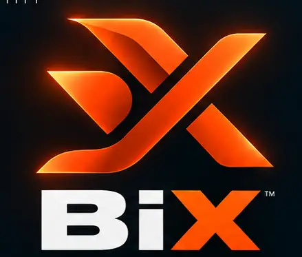

Signal
Observe real activity and find meaningful changes in noisy environments.
A BRIGHTER TOMORROW
BiX Robin connects people, intelligent tools and emerging networks through one live on-chain experiment.

Observe real activity and find meaningful changes in noisy environments.
Turn research into repeatable tools, experiments and measurable outcomes.
Learn from evidence, adapt quickly and keep risk visible.
VERIFY, DON'T TRUST
Official BIXR token address:
0x0B0A3fCB5a38379f71D4f3de9333eE63e374052f
Network: Robinhood Chain • Pair: USDG • Creator tax: 2% • Developer buy at launch: 0
BiX ECOSYSTEM
BiX builds experimental technology and decision systems across market intelligence, automation and emerging digital infrastructure. Public descriptions stay intentionally high-level while the research engine remains private.